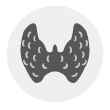

갑상선센터
율제병원 갑상선센터는 당일 진료부터 혈액, 초음파, 세포검사가 가능하도록 원스톱 시스템을 구축하였으며, 세포검사 결과를 확인한 후 당일로 수술 일정을 상담할 수 있도록 하였으며, 내시경 및 로봇수술도
가능합니다. 
진료소개
갑상선센터는 내분비대사내과, 갑상선두경부외과(외과/이비인후-두경부 외과), 영상의학과, 세포조직병리과 및 핵의학과를 연계하여 당일 진료부터 혈액, 초음파, 세포검사가 가능하도록 원스톱 시스템을 구축하였습니다. 또한 세포검사 결과를 확인한 후 당일로 수술담당교수와 수술 일정을 상담할 수 있도록 하였으며 내시경 및 로봇수술도 가능합니다.
또한 율제병원 갑상선 센터에서는 수술 후 동위원소치료를 위한 4개의 동위원 소치료병실이 내부개방형으로 쾌적하게 갖추어져 있어 수술 후에 내분비대사내과와 핵의학과 전문의와 상의하여 빠른 시일 내에 동위원소치료를 예약 받으실 수 있으며 2,4 주 화요일 오후 갑상선 질환의 관리를 위한 교육·상담 시간을 갖고 있습니다.

 진료예약
진료예약 진료과
진료과 전문진료센터
전문진료센터 전문클리닉
전문클리닉 전화번호안내
전화번호안내